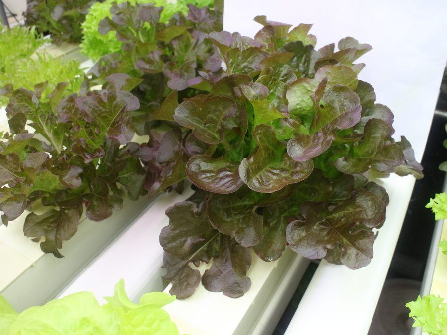
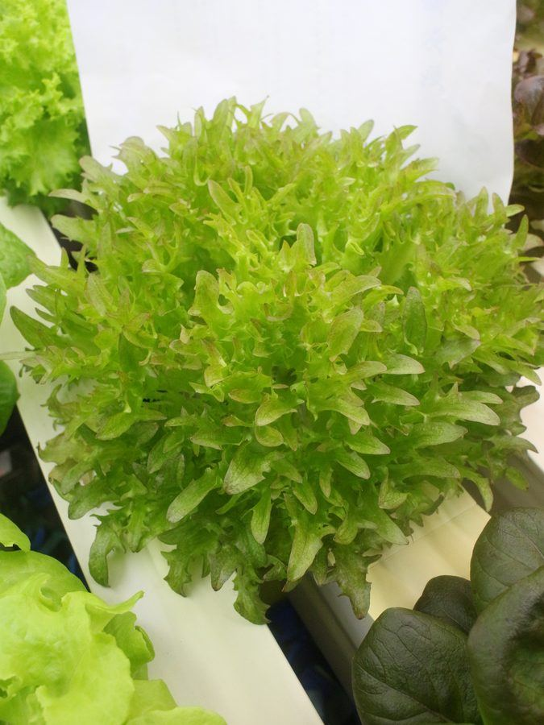
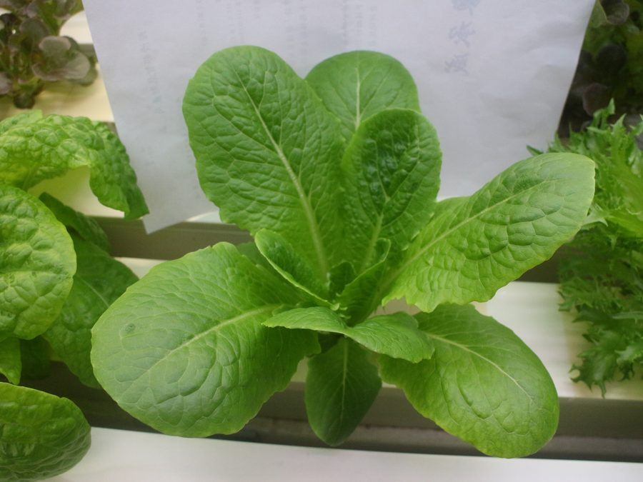
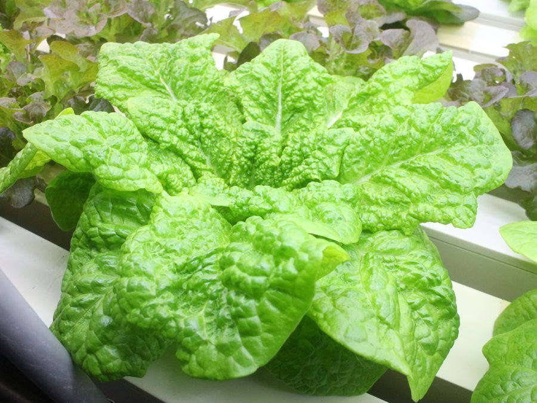
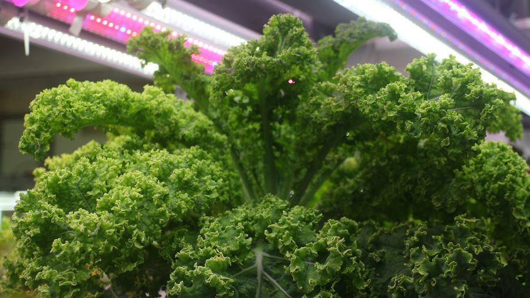

紅奶油萵苣
Red Butter Lettuce
葉片柔嫩肥厚，咬下去帶淡淡奶香尾韻，是水耕萵苣中最受家庭歡迎的入門款。
特色、吃法與搭配
- 特色
- 柔嫩無苦味，小朋友也能輕鬆接受。
- 怎麼吃
- 以生食最能保留風味與營養。可做沙拉基底、夾入手卷／三明治／墨西哥捲餅；亦可短時間清炒（30 秒內）。
- 適合搭配
- 橄欖油＋海鹽即可。進階搭配：藍紋起司、蘋果薄片、烤堅果、油醋醬。
NT$250/ 包
1
北投農場種 10 種萵苣，另外有羽衣甘藍和芝麻葉。全部用魚菜共生種植，連根採收、當天出貨。魚菜共生是什麼・不知道挑哪種？
Red Butter Lettuce
葉片柔嫩肥厚，咬下去帶淡淡奶香尾韻，是水耕萵苣中最受家庭歡迎的入門款。
NT$250/ 包

Green Butter Lettuce
口感清爽多汁、纖維細緻、完全無苦味，是萬用沙拉葉。
NT$250/ 包

Red Oak Leaf
深紅色澤帶橡葉造型，視覺與口感兼具的優雅萵苣。
NT$250/ 包

Green Oak Leaf
經典橡葉造型，溫和的草本香氣，咬感層次分明。
NT$250/ 包

Red Flame Lettuce
葉緣捲曲，帶火焰般的紅暈漸層。
NT$250/ 包

Green Flame Lettuce
微微捲曲的葉片，咬感清脆，百搭好食材。
NT$250/ 包

Romaine Lettuce
挺立葉片、清脆口感，經典凱薩沙拉的主角。
NT$250/ 包

Sweet Romaine
比一般蘿蔓更甜更嫩的改良品種，連小孩與長輩都喜歡。
NT$250/ 包

Frilly Leaf
細密皺葉造型，是沙拉視覺層次的擔當，咬感清脆。
NT$250/ 包

Sweet Crisp Lettuce
咬感清脆甜潤，比一般萵苣更耐熱、更適合熟食。
NT$250/ 包

Kale
葉片厚實捲曲，適合打汁、清炒或烤成脆片。
NT$150/ 包

Arugula
帶獨特芝麻香與微辛辣，是義式料理的靈魂葉菜。
NT$150/ 包